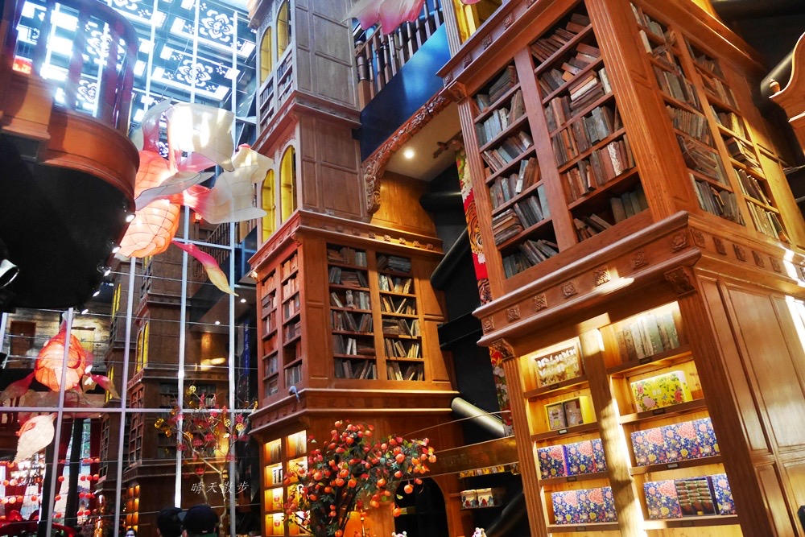
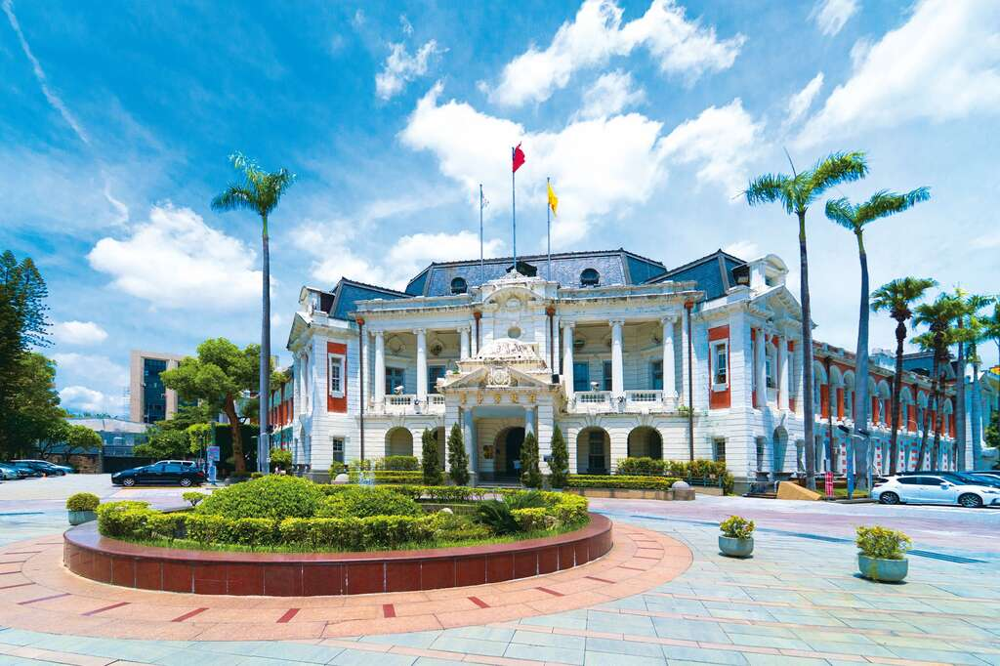
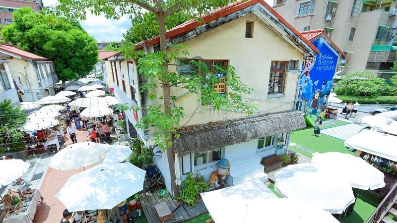

01
宮原眼科
老建築與甜點文化交織的臺中舊城人氣景點。
臺中市中區中山路20號
閱讀更多
宮原眼科鄰近臺中火車站，前身為眼科診所。修復後成為結合歷史建築、甜點與伴手禮的特色空間。挑高書櫃與復古設計也讓這裡成為舊城區熱門的拍照景點。
FEATURED PLACES
精選四個不同風格的臺中景點，從歷史建築、文創空間到自然濕地，一起感受臺中的城市魅力。

01
老建築與甜點文化交織的臺中舊城人氣景點。
臺中市中區中山路20號
宮原眼科鄰近臺中火車站，前身為眼科診所。修復後成為結合歷史建築、甜點與伴手禮的特色空間。挑高書櫃與復古設計也讓這裡成為舊城區熱門的拍照景點。
02
以濕地生態、風車與夕陽聞名的臺中海線景點。
臺中市清水區美堤街8號
高美濕地擁有豐富的濕地生態與開闊景觀，木棧道可以讓遊客近距離觀察自然環境。傍晚時的夕陽、天空倒影與風力發電機，是高美濕地最具代表性的風景。

03
見證城市發展歷史的國定古蹟。
臺中市西區民權路99號
臺中州廳位於臺中市西區，原為日治時期的重要官署建築，現為國定古蹟。建築外觀具有鮮明的歷史特色，是認識臺中城市發展與近代建築的重要景點。

04
老宿舍轉型而成的文創聚落與散步景點。
臺中市西區民生路368巷
審計新村原為政府宿舍，活化後成為青年創業與文創空間。園區保留老宿舍的特色，也有許多小店、市集與創意品牌，很適合散步、拍照與感受臺中的年輕文化。